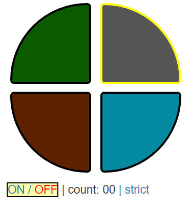
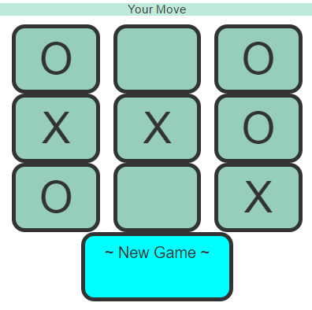
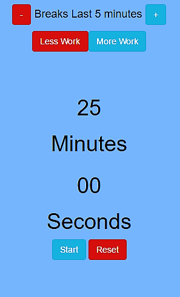

My most recent project. A simple in browser game using jQuery and bootstrap.

An unbeatable game of Tic-Tac-Toe. I built it using jQuery.

I made this stylish calculator for free code camp's front-end developer certificate. It uses jQuery and bootstrap and features simple yet elegant style

This pomodoro productivity timer features simple easy to use design. It was another advaced front end development project.